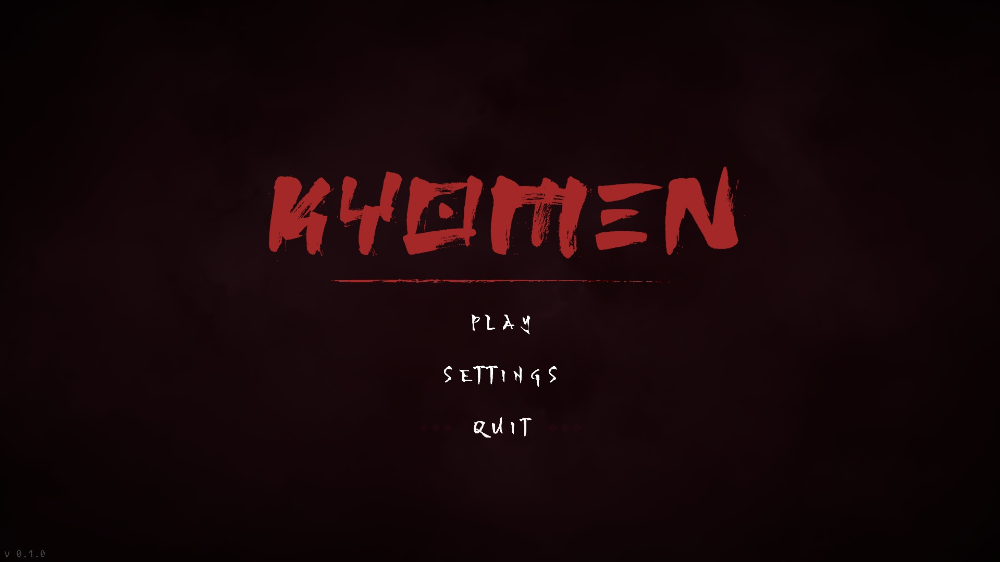
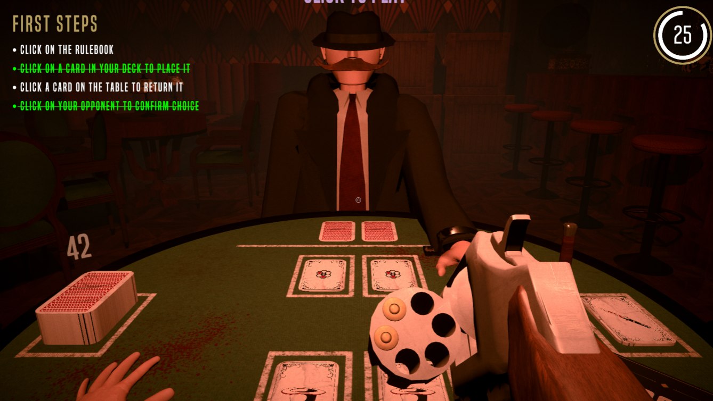
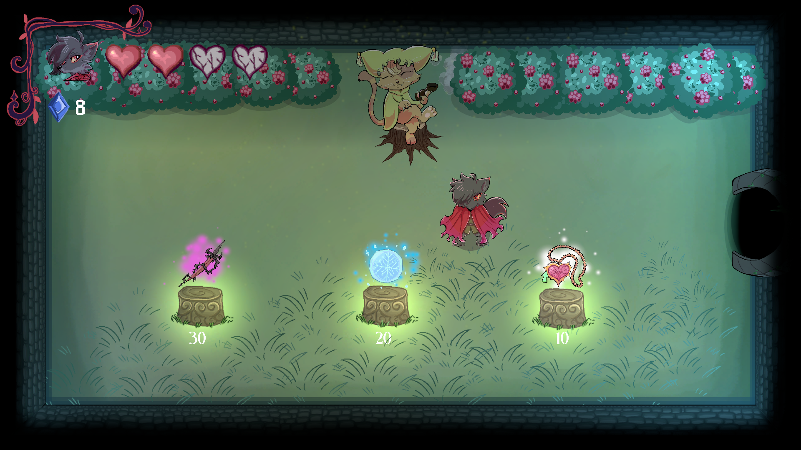
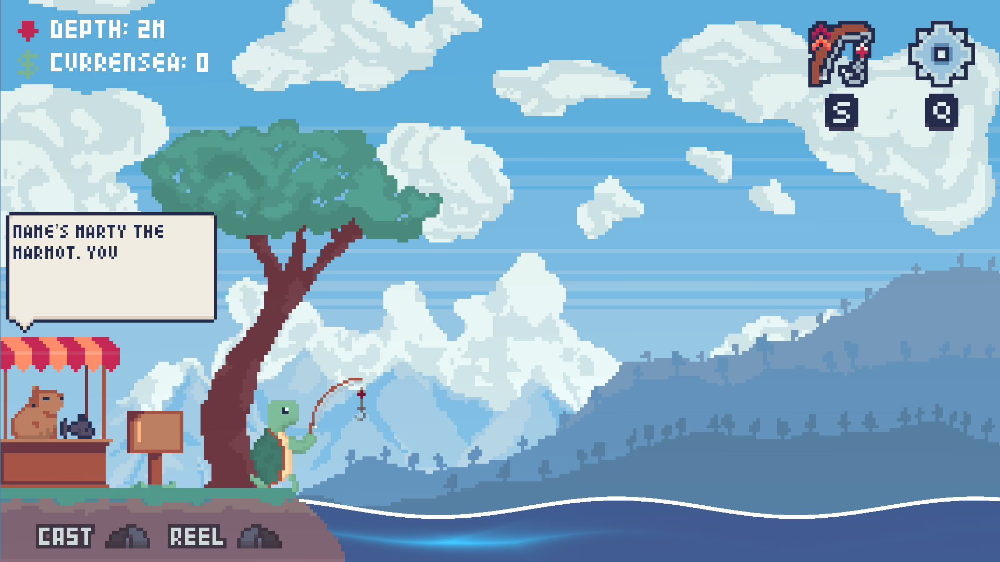
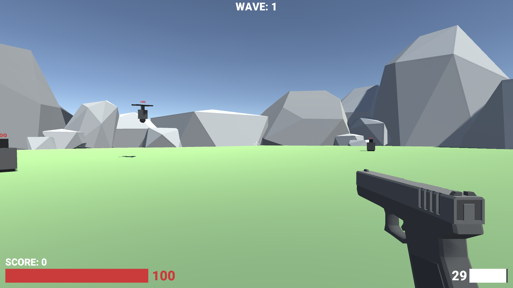
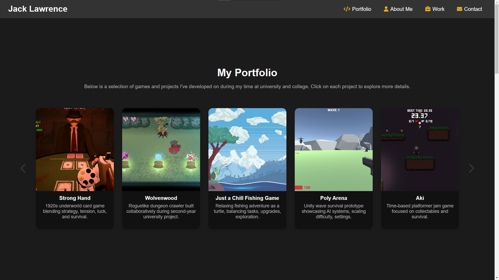

My Portfolio
Below is a selection of games and projects I've developed on during my time at university and college. Click on each project to explore more details.

Kyomen
A second-place Global Game Jam project currently being developed into a professional entry for the Tranzfuzer competition.

Strong Hand
Third-year project: client communication, team leadership, and game design in a multidisciplinary team.

Wolvenwood
Roguelike dungeon crawler built collaboratively during second-year university project.

Just a Chill Fishing Game
Game jam project: rapid prototyping, creative problem-solving, and cross-discipline teamwork.

Run or Die
Experimental project exploring how health and movement speed interact to affect gameplay and player decision-making.

Poly Arena
Unity wave survival prototype showcasing AI systems, scaling difficulty, settings.

Portfolio Website
This website! Designed and built from scratch to showcase my work, with a carousel, mobile menu, and responsive design.